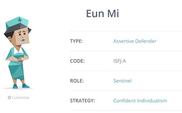
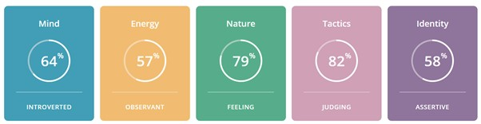
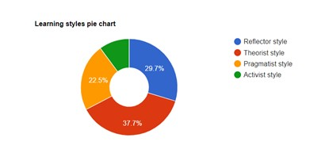

1. Myers-Brigs Type Indicator
- TYPE: Assertive Defender
- CODE: ISFJ-A
- ROLE: Sentinel
- STRATEGY: Confident Individualism

Type: Assertive Defender
Strengths: Supportive/ Reliable and Patient / Imaginative and
Observant / Enthusiastic / Loyal and Hard-Working / Good
Practical Skills :
Defenders are the universal helpers, sharing their knowledge,
experience, time and energy with anyone who needs it. Defender
personalities are often meticulous to the point of
perfectionism, and though they procrastinate, they can always be
relied on to get the job done on time. Defenders take their
responsibilities personally, consistently going above and
beyond, doing everything they can to exceed expectations and
delight others, at work and at home.
Weaknesses: Humble and Shy / Take Things Too Personally /
Repress Their Feelings / Overload Themselves / Reluctant to
Change / Too Altruistic :
Defenders are conservative, sensitive and shy to express
themselves as they are so concerned with others’ feelings that
they refuse to make their thoughts known. Defenders have trouble
separating personal and impersonal situations. Being such warm,
good-natured people, Defenders are willing to let things slide,
to believe that things will get better soon, to not burden
others by accepting their offers of help, while their troubles
mount unassisted.
Role: Sentinel
Sentinels are cooperative, practical, and grounded. Careful and
consistent, Sentinel personalities tend to be self-motivated.
This means that they rarely need external inspiration to be
productive and focused. They work hard and aim never to let
anyone down. Sentinel personalities thrive in environments that
have clear hierarchies and rules. Whether or not they’re in a
formal leadership role, they care about setting a good example.
Strategies: Confident Individualism
Confident Individualists tend to trust in themselves. They enjoy
their own company and don’t mind spending time alone to pursue
their interests. They are motivated by their inner world rather
than outside expectations. They’re opinionated, but they aren’t
excessively worried about what others think.
2. Learning Style: Honey and Mumford

Theorist style
Theorists like to think through problems in a logical manner.
They value rationality and objectivity, and like to assimilate
disparate facts into coherent theories. They are disciplined,
aiming to fit things into a rational order. They are often keen
on basic assumptions, principles, theories, models and systems
thinking.
3. Leadership Style
Servant Leader
For you, others come first. Your need to serve means that you
share power, and delight in seeing others grow. You are happy
when you help others become self-actualized. Ethical priorities
help you remember the responsibilities of leadership. Your
humility informs your interactions with others and helps you
remain conscientious. As a natural listener, you know how to
build a community.
My reflection on test results...
It was fun to take these tests, but I was initially somewhat
doubtful whether they could adequately assess me with
questionnaires only. However, the results completely surprised
me with the level of detail provided in each assessment. They
made me reflect upon myself at work and my personal life, and I
realised the results were quite accurate. Now I understand the
value of tests and how reliable they are, given that a lot of
questions were based on legitimate psychological assessments
The results provided me with valuable information, analysing my
strengths and weaknesses in personality, learning style and
leadership style. These results mean a lot to me as I can
utilise them to navigate various areas, including work, friends,
and even romantic relationships. The test results will give me
some ideas about working in a team more efficiently in the
upcoming group project. They will guide me in ascertaining what
kind of role I might be suitable for, how I can contribute, what
can motivate me, how to solve conflicts, and which areas I need
to improve. For example, I might not be a leader, but as a
defender type, I might be a good coordinator among members,
helping others by being supportive, reliable, patient, and
empathetic. As per the leadership test results, I am a good
listener and will contribute to creating a good community. My
learning style tests suggest I am a Theorist and can contribute
to rational and logical thought processes. Understanding my
personality and learning style can help me maximise my strengths
and find the most efficient way to collaborate with the team.
Furthermore, the results of the tests made me more open-minded
to others. I understand every individual is different and
unique, and the tests made me consider certain personality types
in a more positive light; everyone has his strengths and
weaknesses, and there will be a role fitting to every member. By
sharing our personal profiles, we will be able to understand
individual work styles, preferences, and personalities, which
will help reduce the time used in deciding our roles and
assignments. This will also assist in resolving potential
conflicts among members, as the test results allow us to predict
how different people will interact in the group, the real source
of conflicts, and the best approach to adopt for each member.
Understanding myself and others with the help of tests will be
critical to our success as a team.